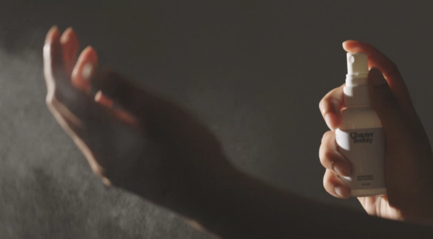

Clean hands
are here to stay
Your skin deserves better than harsh, alcohol-based sanitizers.
Give your body’s defense system a natural boost - no alcohol required.
Cleanse over sanitize
Dry hands? That whiff of alcohol? We don’t want it and we don’t need it. Our all-natural, antimicrobial solution helps your body excel at its favorite sport – removing bacteria and viruses – while keeping your skin healthy and hydrated.
JASON
This is the first product I’ve tried since wearing a mask for the last year that actually keeps my maskne away. Not to mention it’s extremely gentle and fresh.
Our Story
2020 changed things
We all got really good at washing our hands in 2020. (Say it with us: phone, wallet, keys, sanitizer.) But while we were out here trying to stay healthy, that sanitizer was stripping our hands of natural moisture, stinging our skin, and leaving behind the unmistakable scent of alcohol–and not the good kind. We needed a better way: a cleanser without the hard stuff.
So we looked for inspiration
For decades, hospitals have been using antimicrobials over traditional sanitizers and disinfectants. The benefits were immediately apparent to us: safe, natural, good enough for our doctors, and most importantly: they passed the soft-hands test. Which meant no more compromising. It’s time for healthy bodies and healthy skin.